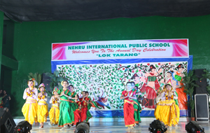

ADMISSION-CRITERIA

Admissions for academic year will be opened for Kindergarten in every September. The minimum age
of children seeking admission to Kindergarten classes should be between 3 and 4 years
as on April 1, of the academic session, with one more year added progressively for higher classes.
All admissions are subject to medical fitness, verification of the date of birth
and proof of residence. The school reserves the right to admission.
Documents required with Application Form
Municipal Birth Certificate (original and an attested copy), proof of residence/ration card (original and an attested copy), two passport size colour photographs and Medical Fitness Certificate
Payment of Fees
Fees have to be paid within the stipulated period failing which the seat offered is liable to be cancelled and may be offered to candidates on the waiting list. The first payment of fees must be made through Pay Order / Demand Draft at the time of admission.
The school shall make all possible efforts to provide school transport on payment to students who desire to use this facility and shall pick up and drop the students at specific points. Transport is available to all sectors of Noida, East Delhi (Mayur Vihar), and Ghaziabad ( Indrapuram, Shipra Sun City )
School Uniform
All items of school uniform, other than shoes, will be available from the school at reasonable rates. A list of uniform items will be provided to parents at the time of admission of their ward.
Timings
Kindergarten : 8.00 A.M. to 12.40 P.M.
Class I to XII : 8.00 A.M. to 2.00 P.M.
The school is open five days a week for the Kindergarten and class 1. For classes 2 onwards first and third Saturdays shall be working days.